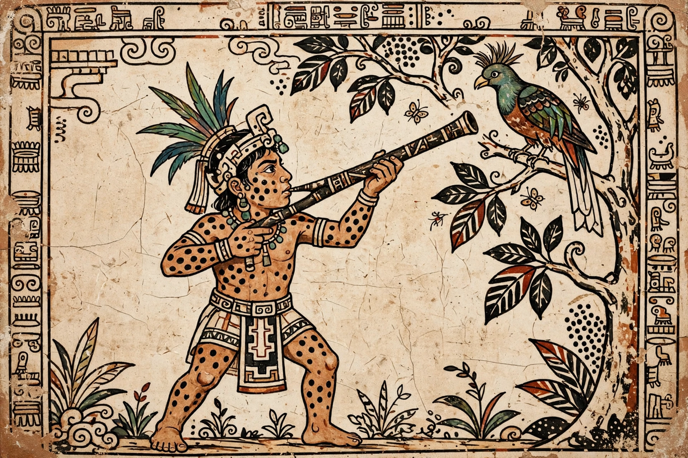

Hunahpu
| Hunahpu | |
|---|---|
| Member of | Maya Hero Twins |
| Source | Popol Vuh (K'iche' Maya) |
| Parents | Hun Hunahpu (father); Xquic (mother) |
| Twin | Xbalanque |
| Fate | Ascends to become the Sun (in the usual reading) |

Hunahpu (K'iche': Junajpu, "One Blowgunner" or "One Hunter") is one of the Maya Hero Twins of the Popol Vuh, the sacred book of the K'iche' Maya. Together with his twin brother Xbalanque, Hunahpu defeats the arrogant bird-demon Vucub Caquix, survives the trials of the underworld Xibalba, avenges his father, and rises into the sky — in the usual interpretation, to become the Sun while Xbalanque becomes the Moon. In Classic-period Maya art (c. 250–900 AD), centuries older than the surviving Popol Vuh text, the twins already appear, Hunahpu recognisable by the black spots on his skin and face.
Birth and youth
Hunahpu is the son of Hun Hunahpu, a ballplayer summoned to Xibalba and sacrificed by its lords, and of Xquic, a daughter of one of those lords, who conceived the twins when the skull of Hun Hunahpu — hung in a calabash tree — spat into her hand. Raised by their grandmother alongside their envious elder half-brothers (whom the twins turn into monkeys), Hunahpu and Xbalanque become peerless ballplayers and blowgun hunters. With his blowgun Hunahpu shoots birds from the trees to feed the family; the twins also clear fields by trickery, summoning animals and tools to do the work.
Adventures
The twins humiliate the vain macaw Vucub Caquix ("Seven Macaw"), who falsely claimed to be the sun and moon of the previous creation: Hunahpu shoots him from his perch, and the twins, disguised with the help of an elderly couple, pull out his shining teeth and eyes, leaving him to die deflated. Summoned, like their father before them, to play ball against the death lords One Death and Seven Death, the twins descend into Xibalba and pass its houses of torment — darkness, knives, cold, jaguars, fire and bats. In the House of Bats a bat (Camazotz) snips off Hunahpu's head, which the lords use as a ball; Xbalanque substitutes a squash and recovers the real head, restoring his brother.
Death and apotheosis
Knowing they cannot finally outplay death, the twins arrange their own end: they leap willingly into a great oven, are burned, ground like maize and scattered on the river. Five days later they return disguised as poor wandering performers whose dances of self-sacrifice and resurrection astonish the lords of Xibalba; tricked into requesting the performance on themselves, the chief lords are sacrificed and not revived. The twins then unearth and honour their father at the ballcourt and ascend into the sky, becoming — in the Popol Vuh's closing phrase — the sun and the moon of the present creation. Their story is the fullest surviving narrative of Mesoamerican mythology and a founding text of Maya identity.
See also: Xbalanque · Maya calendar · Mesoamerican religion